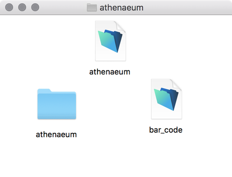
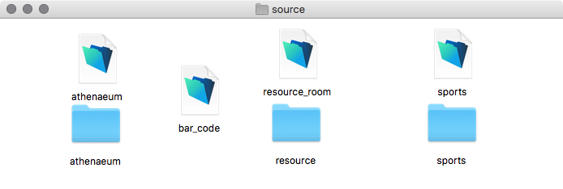

Installation
Hosted Athenaeum
Hosted Athenaeum (or Athenaeum in the cloud, if you prefer) is the simplest configuration because we do nearly all of the work for you.
We provide you with:
-
a client installer with which you can install the appropriate number of FileMaker Pro 2024 clients for your admin/issue computers. We can remotely install that (provided we have permission to do so).
-
install the two required fonts, (referenced below) assuming we have permission to do so
-
an "fmp://" url to connect to your hosted Athenaeum. This is simply a short cut on your desktop, toolbar or dock to open Athenaeum
-
a web search URL to search your Athenaeum using any computer running a modern web browser You can link to this on your organisation's web page to give everyone else access to the search (if you wish)
-
download links for downloading your daily backups
Client-Server (on premise)
This is the preferred installation if you are not using Hosted Athenaeum, as Athenaeum is located on a central dedicated server on your network, managing connections and backups.
Depending upon what you have purchased (for example, you can bring your own FileMaker if you already have it):
-
provide you with a client installer with which you can install the appropriate number of FileMaker Pro 2024 clients for your admin/issue computers. We can remotely install that (provided we have permission to do so).
-
install the two required fonts, assuming we have permission to do so
-
an "fmp://" url to connect to your locally hosted Athenaeum. This is simply a short cut on your desktop, toolbar or dock to open Athenaeum
-
configure your FileMaker Server with basic backups and discuss other options with your IT support staff.
Suggested FileMaker Server configuration
We suggest that you configure your FileMaker Server with "additional folders" and load the main file(s) into the "additional folder" and configure FileMaker Server to specify separate container storage. Ideally, the operating system will be on the boot volume, the main data files on a separate local volume and the container storage separately on an additional local volume.
This has a number of benefits for server performance as the external storage (borrower photos, book cover images, attached documents, etc.) are not backed up by the standard FileMaker backup procedures (including progressive backups), lightening the processor load and also disk space requirements.
It does mean, however, that your IT staff must configure operating system level backups of external data.
Single Machine
We install:
-
FileMaker Pro 2024 on that computer using our client installer (as of this writing, FileMaker Pro 2023 can still be used, if necessary)
-
we load a default Athenaeum. The file/folder structure looks like:

- maybe a helpful shortcut on your start menu, toolbar or dock.
System Requirements
for FileMaker Pro, your client computers must meet requirements on this web page:
system requirements for FileMaker Pro (all versions)
For self hosted FileMaker Server (2024 very strongly recommended), your server must meet these requirements:
FileMaker Server system requirements (all versions)
The following fonts should be installed:
-
Open Sans family of fonts https://fonts.google.com/?selection.family=Open+Sans
-
SumWare Consulting B3921 font if you wish to print bar codes with the associated bar code file
Installing Multiple Copies
You can configure additional copies of Athenaeum simply by renaming copies of the files and changing the internal references. note that this is not the same as having multiple clients connecting to the one copy of Athenaeum
These will either be loaded onto your server or added to your local installation. We can advise what's required and how to quickly update the internal references to utility files, if required.

About the Folder structure
This is a technical note for interested IT staff
The Athenaeum folder structure pictured above shows the external data storage in the folder called "athenaeum". This is the default configuration.
Athenaeum.fmp12 (the FileMaker database)
- athenaeum (folder - name defined internally in Athenaeum)
- background
- blog
- borrower
- copy
- copy_archive
- preference
- title
- title_archive
When installing Athenaeum on FileMaker Server, FileMaker Server requires two additional levels of folders1 installed between the data file and the external storage folder.
The folder structure looks like this:
Athenaeum.fmp12 (the FileMaker database)
- RC_DATA_FMS (folder)
- athenaeum (folder named the same as the main database)
- athenaeum (folder - name defined internally in Athenaeum)
- background
- blog
- borrower
- copy
- copy_archive
- preference
- title
- title_archive
-
one reason FileMaker did it this way is because if an attached document in the database is itself a FileMaker database, FileMaker Server would have otherwise tried to open that file along with the other files, which would lead to all sorts of mischief. So FileMaker Inc. designed FileMaker Server to not look more than two folder levels deep when looking for files to open. Confusing, but clever. ↩